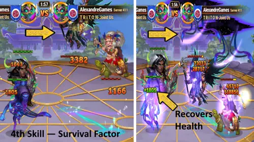

One enemy flies into the air, and K'arkh suddenly turns a teammate's control skill into a devastating hit. That is the moment I want you to understand before spending your resources. In Hero Wars: Dominion Era, his damage comes from building a team that keeps launching enemies while he stays alive to punish them.
My starting point is simple: strengthen Deadly Tendrils, give his physical damage enough Armor Penetration, and protect him until the combo begins. I will walk you through his skills, ascensions, skins, glyphs, artifacts, pets, counters, war flags, and two teams, including the Wodryn partnership that worked well in my tests.


📋 K'arkh Table of Contents
Who Is K'arkh in Hero Wars: Dominion Era?
K'arkh is an Agility-based Warrior who fights on the front line. His defining mechanic is Deadly Tendrils: while he is alive, he attacks enemies thrown into the air, including launches created by allies. This makes Kai, Faceless, and Wodryn valuable partners. I treat him as a physical damage carry who needs protection and coordinated knock-ups.

- Main Role: Warrior
- Main Stat: Agility
- Position: Front line
- Compatible Patronage: Fenris, Mara, Vex
- Soul Stones: Soul Chests, Soul Atrium, Elemental Tournament Shop
Basic attack: 107,314 physical damage (100% Physical Attack) before enemy mitigation, with a listed base cooldown of 5.2 seconds.
K'arkh Overall Rating in the Meta
These are my build and matchup ratings, based on his control, damage potential, synergy, and dependence on allies. They are editorial judgments rather than a measured win-rate ranking.
- Control: ★★★★☆ — three low-health targets can be launched and stunned.
- Damage: ★★★★★ — excellent burst potential when launches connect and physical defenses are handled.
- Synergy: ★★★★★ — allied knock-ups directly feed his passive damage.
- Independence: ★★☆☆☆ — protection, launches, and matchup selection strongly affect his results.
K'arkh Maximum Stats — Hero Wars: Dominion Era
These maximum-build reference values are shown without temporary battle buffs or pet patronage bonuses. They describe a completed build, not the stats a beginner needs before using him.
| Stat | Value | Stat | Value |
|---|---|---|---|
| Intelligence | Agility | ||
| Strength | Health | ||
| Physical Attack | Magic Attack | ||
| Armor | Magic Defense | ||
| Armor Penetration | Accuracy | ||
| Crit Resistance | Power |
K'arkh Pros and Cons — Hero Wars: Web & Facebook
✅ Pros
- Turns his own and allied launches into physical damage through Deadly Tendrils.
- Double-damage attacks against targets within the passive's level condition create strong burst potential.
- Nexus of Horror pressures three enemies with the lowest health, giving the team a way to finish vulnerable targets.
- Negator of Laws combines physical blocking with extra energy, and Survival Factor rewards successful airborne hits with healing.
- Physical Attack improves his core damage and also supports the scaling on his later ascension effects.
❌ Cons
- He needs to survive for Deadly Tendrils to trigger; a strong damage build cannot help after he falls.
- Knock-up prevention can interrupt both his damage and the healing attached to airborne attacks.
- His physical damage needs sufficient Armor Penetration against armored opponents.
- The rift's physical block is temporary and chance-based; it does not provide general protection against magic damage.
- Level-sensitive effects, energy denial, and healing denial can make the combo less reliable.
- Ascension upgrades arrive later and should not replace investment in his basic four-skill kit.
K'arkh Skills Upgrade Priority — Hero Wars: Dominion Era
Learn how K'arkh turns launches into damage, which skills deserve your gold first, and how his later ascensions improve both pressure and survival.
My beginner upgrade order: Deadly Tendrils → Nexus of Horror → Negator of Laws → Survival Factor. Keep level-sensitive skills close to the enemies you face. The cards below stay in their in-game order, and the priorities apply before ascensions are unlocked.
1st Skill — Nexus of Horror
In-game description: K'arkh throws into the air three enemies with the lowest health. When the affected enemies fall back down, they are stunned for 2 seconds. Chance to stun is lowered if the target's level is above 130.

Skill Explanation: This ultimate supplies the launch and a 2-second stun. The base ultimate has no direct damage formula; Deadly Tendrils supplies the follow-up 107,314 physical damage per target, or 214,628 when the double-damage condition applies. Think of Nexus as the setup and the passive as the strike. Those are reference values before mitigation, not guaranteed health removed.
Effect: 3 lowest-health targets; 2-second stun on landing. The displayed stun level threshold is 130.
Evolution Priority: Very High — Keep its level competitive so the stun remains reliable. It starts your own launch combo, but Deadly Tendrils is the first damage investment because it also works with allied launches.
Skill Animation Info
- Type: Ultimate
- Targets: 3
- Stun duration: 2 seconds
Echo of Horror — Rank II Ascension
Ascension effect: After Nexus of Horror, an area appears under the lowest-health enemy and deals damage each second for 8 seconds. At the third upgrade, the enemy nearest its center is thrown into the air when the area disappears.
Skill Explanation: The upgrade adds sustained pressure after the initial launch. It starts at 6,029 damage per second (4.5% Physical Attack + 1,200), then rises to 8,039 (6% Physical Attack + 1,600) and 10,156 (7.6% Physical Attack + 2,000). The last upgrade retains 10,156 per second and adds the closing launch, which can trigger Deadly Tendrils while K'arkh is alive. The scaling stat is Physical Attack; the supplied effect text does not explicitly identify the area's damage type.
Why it matters later: It adds a second opportunity to launch an enemy, but you must first unlock the ascension and buy its final upgrade. Do not plan an early-game team as if this extra launch were already available.
2nd Skill — Negator of Laws
In-game description: K'arkh opens an interdimensional rift that can block enemy physical attacks for 8 seconds. He gains extra energy for each blocked attack.

Skill Explanation: For 8 seconds, each eligible incoming physical attack has a 52% block chance. A successful block also supplies 15.5% extra energy, helping K'arkh reach another ultimate. This is a defensive and energy effect, with no direct damage formula. It is not a guaranteed block, and it does not turn magic attacks into blockable physical attacks.
Block chance formula: 52% (0.2 × skill level + 26).
Extra energy formula: 15.5% (0.05 × skill level + 9).
Evolution Priority: High — More blocking supports survival and creates more chances to gain extra energy. I place it behind the launch and damage skills, but move it up if physical attacks kill him before his first useful combo.
Skill Animation Info
- Type: Periodic
- Cooldown: 18 seconds
- Duration: 8 seconds
3rd Skill — Deadly Tendrils
In-game description: While K'arkh is alive, he strikes every enemy thrown into the air. If the enemy's level is equal to or less than 130, he deals double damage. Chance to deal double damage is lowered if the target's level is above 130.

Skill Explanation: Every successful enemy launch gives K'arkh a target for this passive, whether Nexus, Faceless, Kai, or Wodryn caused it. Each strike deals 107,314 physical damage (100% Physical Attack). Against an enemy that meets the level condition, it becomes 214,628 physical damage (200% Physical Attack) before mitigation. One qualifying three-target launch therefore represents 643,884 total raw physical damage, spread across those three targets.
Damage formula: 107,314 (100% Physical Attack); doubled hit: 214,628 (2 × 107,314).
Evolution Priority: Very High — This is my first priority because it turns every allied launch into damage. Its level condition makes skill investment important even though the displayed attack formula scales with Physical Attack.
Skill Animation Info
- Type: Passive
- Trigger: An enemy is thrown into the air while K'arkh is alive
- Double-damage level threshold: 130 at the listed skill level
4th Skill — Survival Factor
In-game description: Attacks against enemies thrown into the air heal K'arkh for a fraction of the damage dealt.

Skill Explanation: K'arkh recovers 27.5% of damage dealt by the relevant airborne attacks. It does not deal separate damage. If an airborne hit actually deals 100,000 physical damage, the base recovery is 27,500 Health, before healing modifiers. Enemy Armor can lower the damage that feeds this heal, and healing denial can reduce the recovery.
Healing formula: 27.5% (0.25 × skill level − 5) of damage dealt.
Evolution Priority: Medium-High — Reliable airborne damage must come first, because this heal needs damage to work. Improve it after the core combo; raise its practical priority if K'arkh survives the opening but cannot recover between launches.
Immortal Abyss — Rank V Ascension
Ascension effect: The initial unlock adds 5% additional healing from damage dealt; upgrades raise that addition to 7% and then 10%. The final upgrade also gives a one-time escape when K'arkh drops below 20% Health: he enters the abyss for 2 seconds, avoids enemy attacks, and restores 100,486 Health (75% Physical Attack + 20,000).

Skill Explanation: The healing addition strengthens the recovery loop, while the final escape can buy time for another combo. At the listed base rate, a 10-percentage-point addition means 37.5% healing (27.5% + 10%). The separate escape heal scales with Physical Attack and can trigger only once per battle. Its formula evaluates to 100,485.5 at 107,314 Physical Attack, displayed as 100,486.
Why it matters later: This is a late progression safety net at Rank V. Until its final upgrade is unlocked, use a tank and support skills to cover the opening; the basic Survival Factor skill does not include the escape.
Best Skin for K'arkh — Hero Wars: Dominion Era
Choose K'arkh's skins by the problems they solve: get physical damage through Armor, improve his tendril hits, then cover the threats that kill him.
My general skin order: Stellar → Celestial / Masquerade → Default → matchup defenses. Celestial and Masquerade give the same listed stat bonus, so either can be your first Physical Attack skin. Improve Default alongside them when its cheaper total cost fits your resources. Skin bonuses stack once unlocked; appearance is a cosmetic choice.
Default Skin
Stats gain: Agility +1,365
- Physical Attack from Agility: +4,095
- Armor from Agility: +1,365
Each Agility point grants 2 Physical Attack and 1 Armor, plus 1 more Physical Attack because Agility is K'arkh's main stat.
Evolution Priority: High — An efficient mixed upgrade: as his main stat, Agility adds damage and Armor. It is useful early, while direct Physical Attack skins give a larger final damage increase.
Total Agility Skin Stones for maximum level: 30,825.
Stellar Skin
Stats gain: Armor Penetration +10,650
Evolution Priority: Very High — My first offensive target against armored enemies. Stronger tendril hits mean little if Armor absorbs them. Once you already penetrate the intended target's Armor, extra Physical Attack becomes more useful.
Total Agility Skin Stones for maximum level: 55,410.
Dark Depths Skin
Stats gain: Magic Defense +10,650
Evolution Priority: Low — A matchup defense rather than a damage upgrade. Raise it sooner if magic pressure is the reason he falls; it does not improve his physical block chance.
Total Agility Skin Stones for maximum level: 55,410.
Celestial Skin
Stats gain: Physical Attack +7,095
Evolution Priority: High — Directly strengthens basic attacks and Deadly Tendrils, which can also increase the damage feeding Survival Factor. It also supports both ascension formulas.
Total Agility Skin Stones for maximum level: 55,410.
Masquerade Skin
Stats gain: Physical Attack +7,095
Evolution Priority: High — Matches Celestial's listed bonus and purpose. Build whichever is available first, then add the other after your Armor Penetration is sufficient.
Total Agility Skin Stones for maximum level: 55,410.
Solar Skin
Stats gain: Armor +10,650
Evolution Priority: Medium — Helps him survive physical attacks outside the rift or when a block fails. Prioritize it earlier when physical burst prevents the opening combo.
Total Agility Skin Stones for maximum level: 55,410.
Winter Skin
Stats gain: Magic Defense +21,300
Evolution Priority: Medium — A larger listed Magic Defense bonus for difficult magic matchups. It is not a universal first investment; consider access and upgrade cost before comparing value with Dark Depths.
Total Agility Skin Stones for maximum level: 110,520.
K'arkh Glyph Evolution Priority
Spend glyph resources where K'arkh gains most: Armor Penetration and Physical Attack lead, while Health and Armor help him live long enough to hit.
My general glyph order: Armor Penetration → Physical Attack → Agility → Health → Armor. If he dies before attacking, fix the defensive bottleneck first. The visual order below matches the game.

1st Glyph — Health
Stats gain: Health +62,200
Evolution Priority: Medium-High — A larger health pool helps him reach his first combo and gives healing room to work. Move it ahead of damage when early deaths are the problem.

2nd Glyph — Agility
Stats gain: Agility +1,135
Evolution Priority: High — Provides +3,405 Physical Attack and +1,135 Armor for this Agility hero, combining offense and a useful defensive gain.
Agility conversion: 1,135 × 3 = +3,405 Physical Attack; 1,135 × 1 = +1,135 Armor.

3rd Glyph — Physical Attack
Stats gain: Physical Attack +4,340
Evolution Priority: Very High — Directly improves Deadly Tendrils and basic attacks. It also increases the raw damage that can feed his airborne-attack healing.

4th Glyph — Armor
Stats gain: Armor +6,500
Evolution Priority: Medium — Useful against physical pressure when the rift is unavailable or fails to block. It cannot replace Magic Defense against magic threats.

5th Glyph — Armor Penetration
Stats gain: Armor Penetration +6,500
Evolution Priority: Very High — My first damage glyph against armored targets because it helps physical hits reach their potential. Switch emphasis to Physical Attack when the target's Armor is already covered.
K'arkh Artifact Evolution Priority — Hero Wars: Dominion Era
Build K'arkh's artifacts around reliable physical damage: the book supplies penetration, the weapon boosts the team, and the ring adds useful Agility.
My general artifact order: Alchemist's Folio → K'arkh's Essence → Ring of Agility. Compare the weapon's activation reliability with the book's permanent value; their upgrade resources and star progression are separate considerations.

Weapon Artifact — K'arkh's Essence
Stats gain on activation: Physical Attack +33,459 to the team for 9 seconds.
Using Nexus of Horror can trigger the weapon buff. Its activation chance depends on artifact evolution; treat the displayed bonus as a temporary combat effect rather than permanent character-sheet Physical Attack.
Evolution Priority: High — Strengthens team physical damage during the ultimate window, including further tendril hits while the buff is active. Build activation reliability, then invest in its stat bonus without neglecting personal penetration.

Book Artifact — Alchemist's Folio
Permanent stats gain: Physical Attack +5,577 and Armor Penetration +16,731.
Evolution Priority: Very High — My first sustained damage investment: both stats help the physical carry do his job, and the penetration is especially valuable against armored targets.

Ring Artifact — Ring of Agility
Stats gain: Agility +6,249
- Physical Attack from Agility: +18,747
- Armor from Agility: +6,249
Evolution Priority: Medium-High — A substantial permanent damage increase with Armor as a bonus. I usually build it after establishing the book's penetration and the weapon's usefulness to the team.
Best Patronage for K'arkh
Compare all three compatible patrons for K'arkh: Fenris for a balanced physical build, Vex for shared damage pressure, and Mara for longer control.
My default ranking is Fenris → Vex → Mara for a team built around K'arkh as the main damage dealer. This is a matchup-dependent recommendation. A patron is assigned to one hero; the active team pet is a separate choice.
1st Place — Fenris

Fenris: Physical Attack and Armor Penetration support his core hits. Blind Rage gives basic attacks a 40% chance to blind an enemy for 2 seconds at the listed patronage reference. I choose Fenris first for damage stats plus useful disruption against physical attackers. The blind is tied to basic attacks; do not assume every tendril strike also blinds.
Blind chance: 40% (0.32% Patronage Power + 4.905).
2nd Place — Vex
Vex: Also supplies Physical Attack and Armor Penetration. The owner's physical attacks build up to five Deep Wounds stacks that expire after 8 seconds, helping subsequent allied physical attacks against the marked target. Vex becomes more attractive when several teammates repeatedly hit the same enemies; Fenris remains my default for the two teams below.
Extra damage per stack: 5,036 at the listed patronage reference; the value depends on Patronage Power.
3rd Place — Mara

Mara: Provides Magic Attack and Magic Defense, which are less directly aligned with the physical carry build. Deadly Weakness can extend the stun after Nexus of Horror: a 200% duration increase turns its base 2 seconds into 6 seconds if fully applied. It extends the stun, not the launch, and does not create more Deadly Tendrils triggers.
Control duration increase: 200% (1.77% Patronage Power + 4.45).
Mara's eligible control effects are listed on the official Mara page. The rankings above reflect how I would use those effects with K'arkh.
How to Counter K'arkh in Hero Wars: Dominion Era
The most useful counters interrupt his launches, delay his ultimate, or punish the extra energy he gains. Choose around the whole opposing team: no single hero guarantees a win against every K'arkh lineup.

Andvari
Living Earth protects Andvari and his nearest ally from displacement and knock-ups, prioritizing the ally in front of him. A prevented launch denies the corresponding Deadly Tendrils hit and its healing opportunity. Position that protection around a key target: in Dominion Era, it does not protect every ally behind Andvari. Official hero reference.

Jorgen
Energy-gain denial can delay Nexus of Horror and the weapon-buff window. That makes K'arkh wait for allied launches instead of starting his own combo. Keep Jorgen alive long enough to apply the effect, and remember that delaying the ultimate does not disable the passive attacks triggered by Faceless or Wodryn. Official hero reference.

Satori
Negator of Laws rewards successful blocks with bonus energy, which exposes K'arkh to Satori's extra Fox Fire marks. Satori then converts accumulated marks into magic damage. This counter needs time and a successful detonation; killing or disabling Satori before that can change the outcome. Official hero reference.
K'arkh Best War Flags — Hero Wars: Dominion Era
Pick a war flag for K'arkh's whole lineup: reinforce the opening defense, strengthen healing, or reduce healing on targets your team needs to finish.

War Flag of Bastion
Effect: At battle start, allies gain Armor equal to 30% of the front hero's Armor; the effect weakens to 5% over 20 seconds. Each red pattern extends the effect by 3 seconds.
K'arkh and Team Benefit: My default against physical opening pressure in these tank-led teams. It gives K'arkh time to reach a launch combo, using the front tank's Armor as the reference. Evaluate that tank's Armor and the enemy's penetration before choosing it.
War Flag of Recovery
Effect: Increases all healing by 10%.
K'arkh and Team Benefit: Supports Martha's healing and K'arkh's Survival Factor, making it a practical choice when the team survives the opening but loses longer exchanges. It cannot make blocked healing go through, so judge it against the opposing healing denial.

War Flag of Decline
Effect: Reduces the enemy team's healing by 10%.
K'arkh and Team Benefit: Helps prevent low-health targets from recovering between launch windows. I consider it when enemy healing is the obstacle and my own team already has enough protection.
Position matters: K'arkh is a front-line Warrior, but Wodryn or Astaroth stands ahead of him in the teams below. A flag that targets the foremost hero therefore benefits that tank directly. Readiness targets the rearmost hero, Martha in these lineups, so it would not directly give K'arkh its energy.
Best Teams for K'arkh — Hero Wars: Dominion Era
These are the two lineups I would start testing. The tables show the back line on the left and the front tank on the right, with each patron above its hero. Axel is the active team pet in both; his patronage assignment is shown separately.
Why these patrons: Fenris supplies K'arkh with physical offense. Merlin speeds up Faceless's magic-damage skills, including his launch skill, helping the setup arrive more often. Oliver adds durability to Jorgen, while Robin's periodic bonus energy helps Martha reach her ultimate. Axel's patronage limits damage from individual powerful attacks against the front tank. Keep the active pet's team skills separate from these individual patronage effects.
Team #1 Analysis — Wodryn Launch Synergy
Lineup: Wodryn (Axel), K'arkh (Fenris), Jorgen (Oliver), Faceless (Merlin), Martha (Robin). Active pet: Axel. Starting flag: Bastion against physical opening pressure.
| Team pet / Flag | Back line | Support | Support | Carry | Front tank |
|---|---|---|---|---|---|
| Active pet | Patron | Patron | Patron | Patron | Patron |
| War Flag | Faceless |
This is the partnership that stood out in my tests: Wodryn can launch enemies and feed K'arkh's Deadly Tendrils. Faceless supplies another launch source, giving the carry opportunities beyond his own ultimate. Jorgen pressures enemy energy, while Martha supports the longer fight the team may need to assemble its combos.
How I would play it: Protect K'arkh through the first exchange, then watch whether Wodryn and Faceless are actually launching targets he can hit. Wodryn's qualifying critical basic attacks can launch enemies; do not assume every critical hit from roots or thorns does the same. Use the weapon-buff window for stronger physical follow-up, and switch to Recovery when sustain is the real limitation.
What I would watch: Andvari can protect key enemies from launches, and energy denial can delay your own opening. If K'arkh dies before the first combo, increase practical durability before chasing a higher damage number. Keep Wodryn's and Faceless's levels competitive so the setup is dependable.
Team #2 Analysis — Astaroth Protection
Lineup: Astaroth (Axel), K'arkh (Fenris), Jorgen (Oliver), Faceless (Merlin), Martha (Robin). Active pet: Axel. Starting flag: Recovery when the opening is stable and healing matters.
| Team pet / Flag | Back line | Support | Support | Carry | Front tank |
|---|---|---|---|---|---|
| Active pet | Patron | Patron | Patron | Patron | Patron |
| War FlagRecovery | Faceless |
I use this version when I want Astaroth's protective kit and resurrection available around the carry. Faceless remains the key allied launch source, K'arkh adds his own ultimate, and Jorgen plus Martha gives the team control and recovery. Astaroth's resurrection can rescue an ally, but it is not reserved for K'arkh, so watch who consumes it.
How I would play it: Give the team enough opening protection to reach its first launch, then let Martha and Survival Factor restore lost health. Recovery reinforces that plan. Choose Bastion instead when early physical damage breaks the formation before healing can help.
What I would watch: Replacing Wodryn removes that additional launch route, so you rely more on Faceless and Nexus of Horror. This lineup still needs sufficient Armor Penetration and a plan for enemies that prevent launches. Test both versions against the actual defense instead of treating either as an automatic win.
My Final Advice for Building K'arkh
If I were building K'arkh from the beginning, I would put gold into Deadly Tendrils and Nexus of Horror, establish Armor Penetration through the book, glyph, and Stellar Skin, then improve Physical Attack. I would fix early survival problems as soon as they appeared, because his passive needs him alive to turn allied launches into damage.
Start with Fenris and a protected lineup, then compare Wodryn's extra launch synergy with Astaroth's safety. Ascensions give the build more pressure and a later escape, but the foundation stays the same: keep K'arkh alive, launch an enemy, and make that hit count.
Explore new skills with our featured heroes!
 Eva Guide – The Support Hero of Hero Wars Dominion Era
Eva Guide – The Support Hero of Hero Wars Dominion Era
 Martha Revamp Guide – The Healing Maestro of Hero Wars Dominion Era
Martha Revamp Guide – The Healing Maestro of Hero Wars Dominion Era
 Wodryn Guide – The Tank of Hero Wars Dominion Era
Wodryn Guide – The Tank of Hero Wars Dominion Era
Leave Your Opinion!
Which K'arkh lineup works for you: Wodryn's launch synergy or Astaroth's protection? Share your experience or ask about a difficult matchup in the comments.